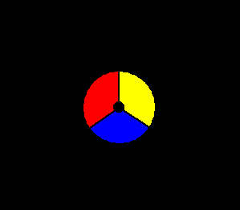
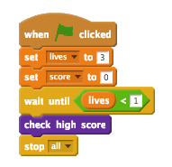

Let’s start by creating a controller, that will be used to collect dots.
Activity Checklist
Start a new Scratch project, and delete the cat sprite so that your project is empty. You can find the online Scratch editor at jumpto.cc/scratch-new.
For this project, you should have a ‘Project Resources’ folder, containing the controller image you can use. Make sure that you can find this folder, and ask your club leader if you can’t find it.
screenshot
From this ‘Project Resources’ folder, import ‘controller.png’ as a new sprite. If you don’t have this image you can draw it yourself! You should also make the stage black. Here’s how your stage should look:
screenshot
You can move your controller really easily, by turning it left or right when the arrows are pressed:
when flag clicked
forever
if <key [left arrow v] pressed?> then
turn left (2) degrees
end
if <key [right arrow v] pressed?> then
turn right (2) degrees
end
end
Test out your controller – it should spin left and right.
Although this code works, it would be much better if the controller sped up and slowed down gradually. To do this, delete the code you just created for your controller, and create a new variable called controller speed.
Add this code to your controller, to make it repeatedly use the controller speed to move:
when flag clicked
set [controller speed v] to [0]
forever
turn right (controller speed) degrees
end
At the moment, this code won’t move the controller, as the speed has been set to 0! Create a separate script in your controller that increases the speed when the right arrow is pressed.
when flag clicked
forever
if <key [right arrow v] pressed?> then
change [controller speed v] by (0.2)
else
end
end
Have you noticed that there’s a gap in the code above? You will need to add some code to slow down the controller if the right arrow key isn’t pressed. However, you only want to slow down the controller until the speed gets back down to 0, otherwise it’ll start spinning backwards.
Here’s the code you should add:
if <(controller speed) > [0.1]> then
change [controller speed v] by (-0.2)
end
Here’s how your controller code should look:
screenshot
Test your project again. If you hold down the right arrow key your controller should speed up. Let go of the key and your controller should gradually slow down.
Save your project
Challenge: Spinning left
Duplicate the entire controller script for spinning to the right. Can you modify this duplicated code so that your controller spins to the left when the left arrow key is held down?
You’ll need to change some of the numbers in the code! (Hint: the controller will spin to the left if the controller speed variable has a negative value.)
Save your project
Step 2: Collecting dots
Let’s add dots to the game that the player will collect with their controller.
Activity Checklist
Create a new sprite called ‘red’. This sprite should be a small red dot.
screenshot
Add this script to your ‘red’ dot sprite, to create a new dot clone every few seconds:
when flag clicked
wait (2) secs
forever
create clone of [myself v]
wait (pick random (5) to (10)) secs
end
When each clone is created, you want it to appear in one of the 4 corners of the stage.
screenshot
To do this, first create a new list variable called start positions and click the (+) to add in the values -180 and 180.
screenshot
You can use these 2 list items to pick a random corner of the stage. Add this code to the ‘dot’ sprite, so that each new clone moves to a random corner and then slowly moves towards the controller.
when I start as a clone
go to x: (item (random v) of [start positions v]) y: (item (random v) of [start positions v])
point towards [controller v]
show
repeat until <touching [controller v]?>
move (1) steps
end
The code above chooses either -180 or 180 for the x and y positions, meaning that each clone starts in one corner of the stage.
Test your project. You should see lots of red dots appear in each corner of the screen, and move slowly towards the controller.
screenshot
Create 2 new variables called lives and score.
Add code to your stage to set the lives to 3 and the score to 0 at the start of the game.
You need to add code to the end of your red dot’s when I start as a clone code, so that either 1 is added to the player’s score if the colours match, or 1 is taken from the player’s lives if the colours don’t match.
move (5) steps
if <touching color [#FF0000]?> then
change [score v] by (1)
play sound [pop v]
else
change [lives v] by (-1)
play sound [laser1 v]
end
delete this clone
Add this code to the end of your stage’s script, so that the game ends when the player loses all of their lives:
wait until <(lives) < [1]>
stop [all v]
Test your game to make sure this code works as expected.
Save your project
Challenge: More dots
Duplicate your ‘red’ dot sprite twice, and name the two new sprites ‘yellow’ and ‘blue’.
screenshot
Edit these sprites (including their code), so that each coloured dot has to match the correct colour on the controller. Remember to test your project, making sure you gain points and lose lives at the right times, and that your game isn’t too easy or too hard!
screenshot
Save your project
Step 3: Increasing the difficulty
Let’s make the game get more difficult the longer the player survives, by slowly reducing the delay between dots appearing.
Activity Checklist
Create a new variable called delay.
On your stage, create a new script that sets the delay to a high number, and then slowly reduces the delay time.
when flag clicked
set [delay v] to (8)
repeat until < (delay) = (2)>
wait (10) secs
change [delay v] by (-0.5)
end
Notice that this is very similar to how a game timer works!
Finally, you can use this delay variable in your red, yellow and blue dots’ scripts. Remove the code that waits a random number of seconds between creating clones, and replace it with your new delay variable:
wait (delay) secs
Test your new delay variable, and see whether the delay between dots reduces slowly. Does this work for all 3 coloured dots? Can you see the value of the delay variable reducing?
Save your project
Challenge: Faster moving dots
Can you improve your game by adding a speed variable, so that the dots start off moving 1 step at a time, and steadily get faster and faster? This will work in a very similar way to the delay variable used above, and you can use this code to help you.
Save your project
Step 4: High score
Let’s save the high score, so that players can see how well they’re doing.
Activity Checklist
Create a new variable called high score.
Click on your stage, and create a new custom block called check high score.
screenshot
Just before the end of the game, add in your new custom block.
screenshot
Add code to your custom block to store the current score as the high scoreif it’s the highest score so far:
define [check high score]
if <(score) > (high score)> then
set [high score v] to (score)
end
Test the code you’ve added. Play your game to check whether the high score is updated correctly.
Save your project
Challenge: Improve your game!
Can you think of ways to improve your game? For example, you could create special dots that:
double your score;
slow down the dots;
hide all the other dots on the screen!
Save your project
Challenge: Game menu
Can you add a menu (with buttons) to your game? You could add an instructions screen, or a separate screen for showing the high score. If you need help with this, the ‘Brain Game’ project will help you.